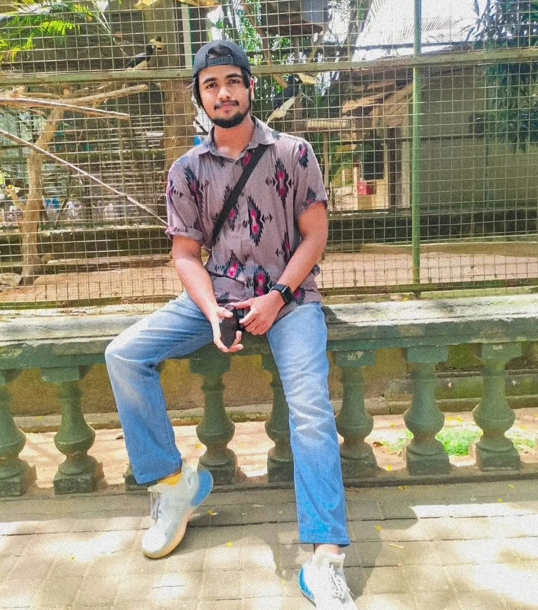

About Me
Get to know me!! :)
Hi, I’m Sameer! I’m a Final Year Cybersecurity student at NSBM Green University (University of Plymouth partner), graduating in 2025. My work revolves around securing systems, detecting threats, and solving cybersecurity challenges. I’ve gained hands-on experience during my internship at MillenniumIT ESP, where I worked on SIEM optimization (Azure Sentinel, FortiSIEM), log analysis, and advanced data querying with KQL. Beyond offensive security and penetration testing, I’ve also explored digital forensics—analyzing email metadata, investigating network traffic, and uncovering IoCs using tools like Autopsy and Wireshark. Whether it’s offensive or defensive, I love diving deep into the details to make digital infrastructures more secure.

I’m an active contributor to the FOSS Community and a member of the NSBM Islamic Society, always looking for ways to collaborate, grow, and give back. I’m all about continuous learning, staying ahead of threats, and tackling real-world security issues. Let’s connect to explore ideas and secure the tech landscape together!
Furthermore, I complemented by certifications including SSCP (Coursera), highlights my dedication to continuous learning and specialization in the field. I expertise in web development, C# .NET Framework, digital forensics, and dark web operations equips myself with a diverse skill set essential for tackling multifaceted cybersecurity threats.
As I aspire to roles such as CTO, CIO, or CISO, My vision of integrating technological advancement with humanitarian impact underscores my broader perspective on the role of cybersecurity in shaping a safer, more ethical digital environment.
Pursuing internships to further apply my knowledge signifies my proactive approach towards gaining practical experience and making meaningful contributions to organizations' cybersecurity initiatives...
Alright!! Now, the final test: Here's a small challenge for ya! Crack the password! G Luck! :)
NOTE**: Support Our Mission I am dedicated to providing high-quality Cyber Security / Tech guides, resources, notes, and more, all for free. Your support can help keep this content accessible to everyone. If you find my resources helpful and would like to see more, please consider making a donation. Every contribution, no matter how small, helps me continue to deliver valuable content and improve the quality of the resources available. Thank you for your support!
NOTE**: Support Our Mission I am dedicated to providing high-quality Cyber Security / Tech guides, resources, notes, and more, all for free. Your support can help keep this content accessible to everyone. If you find my resources helpful and would like to see more, please consider making a donation. Every contribution, no matter how small, helps me continue to deliver valuable content and improve the quality of the resources available. Thank you for your support!